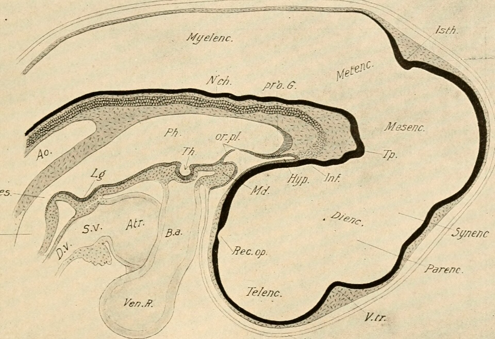
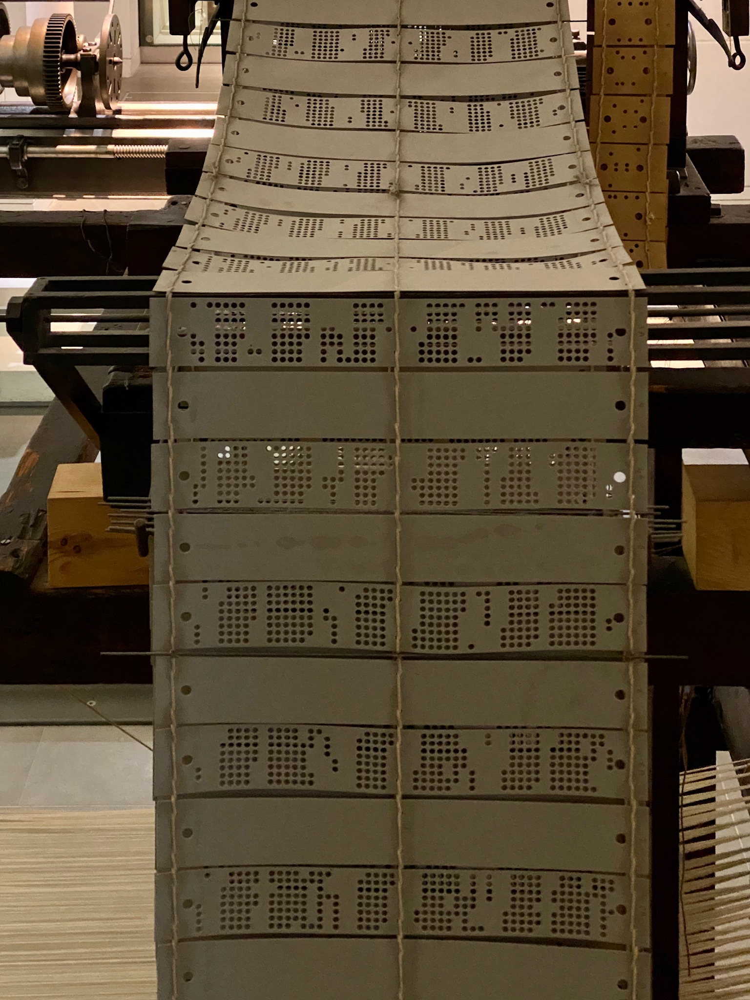

Deyan Todorov
I write software in Sofia, from a compiler for DNA to patches for a Vulkan driver.
I believe in doing a job 100% or not doing it at all.
Targovska Street in Sofia, on a postcard from before 1930.
I'm Deyan and I live in Sofia. Most days I write software, and nearly all of it ends up on this page: a compiler for DNA, a research lab, a few apps and patches for a graphics driver.
Epigenesis
DNA is a recipe, so I wrote a compiler for it.
In biology a brain gets built from the instructions in DNA, and I wanted to try the same thing in software. You give Epigenesis a DNA sequence and tell it how to read it. It gives back a module that describes how something develops, and it seals that module so anyone can run it again and get the same result.
It reads FASTA, GenBank and GFF3 files. So far it runs two published models of how neural cells pick their fate, grows small networks from a single starting cell, and turns real mutations into proteins. Two of my own predictors failed their tests and I kept them in the repo anyway. Version 1.6 is on GitHub.

Misul
Misul is the AI research lab I started in Sofia. We build models from how the brain works.
- InterlaceA single architecture that handles language and step-by-step computation.
- MonodraticSparse attention that only reads the tokens it needs.
- LaplaceAn inference engine for Apple Silicon that runs every model through one compiler.
- misul.org
Independent
Apps and sites I build on my own.
- PhoneCodeA coding agent that runs on your Android phone.
- optiSYSKeeps a Windows PC responsive in the background.
- dzipobel.wikiLiterature and grammar notes for the Bulgarian matura.
- SchoolMapA map tool I made for geography lessons.

Open source
I contribute to Khronos MoltenVK, the Vulkan driver for Apple platforms. Four of my patches are merged. Vulkan ray tracing on macOS, mesh shaders and a few fixes are still in review.